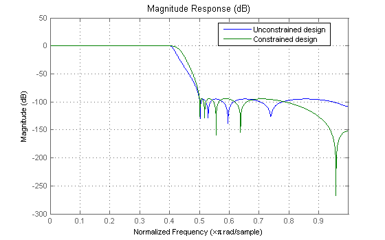
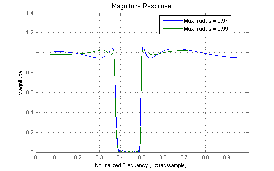
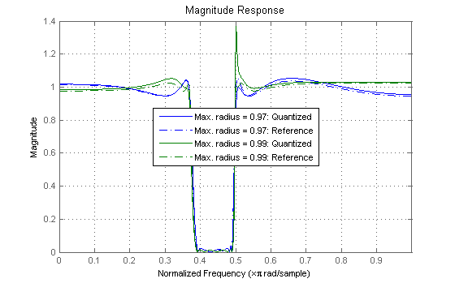
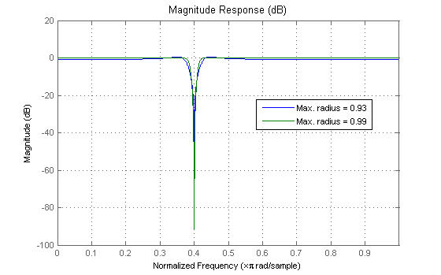
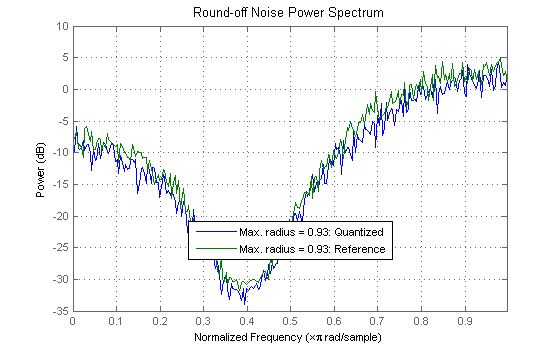

This demo shows some of the key features of the IIRLPNORMC function. This function uses a least-Pth constrained optimization algorithm to design IIR filters with arbitrary magnitude response.
IIRLPNORMC has a syntax that is very similar to that of IIRLPNORM (see the least Pth-norm optimal IIR filter design demo for details). The difference is that an additional parameter, namely the pole radius constraint can be specified.
For example, consider the design of a lowpass filter using both the unconstrained algorithm in IIRLPNORM and the constrained algorithm in IIRLPNORMC. In the later case, the pole radius is constrained to 0.92. In order to compensate for the radius constraint, it is necessary to increase the filter order to obtain the same attenuation.
N = 10; % Unconstrained numerator order M = 10; % Unconstraine denominator order F = [0 0.4 0.5 1]; % Frequency vector E = F; % Frequency edges A = [1 1 0 0]; % Magnitude vector W = [1 1 100 100]; % Weight vector Nc = 12; % Constrained numerator order Mc = 12; % Constrained denominator order R = 0.92; % Maximum pole radius for constrained design [b,a,err,sos,g] = iirlpnorm(N,M,F,E,A,W); [bc,ac,errc,sosc,gc] = iirlpnormc(Nc,Mc,F,E,A,W,R); H(1) = dfilt.df1sos(sos,g); H(2) = dfilt.df1sos(sosc,gc); [z,p,k]=zpk(H(2)); % Find poles and zeros of constrained filter sqrt(real(p).^2+imag(p).^2) % Radii of all poles
ans =
0.3801
0.3801
0.6004
0.6004
0.7580
0.7580
0.8377
0.8377
0.9200
0.9200
0.9200
0.9200
hfvt = fvtool(H); legend(hfvt,'Unconstrained design','Constrained design'); set(hfvt, 'Color', [1 1 1])
The closer the poles are to the unit circle, the more sensitive the filter's frequency response is to pole movement due to coefficient quantization. For example, consider the following bandstop filter design.
N1 = 14; N2 = 10; M1 = 14; M2 = 10; F = [0 0.37 0.39 0.49 0.5 1]; E = F; A = [1 1 0 0 1 1]; W = [1 1 2 2 1 1]; R1 = 0.97; R2 = 0.99; [b1,a1,err1,sos1,g1] = iirlpnormc(N1,M1,F,E,A,W,R1); [b2,a2,err2,sos2,g2] = iirlpnormc(N2,M2,F,E,A,W,R2); Hd(1) = dfilt.df1sos(sos1,g1); Hd(2) = dfilt.df1sos(sos2,g2); set(hfvt, 'Filters', Hd, 'MagnitudeDisplay','Magnitude'); legend(hfvt,sprintf('Max. radius = %0.5g',R1),sprintf('Max. radius = %0.5g',R2));
We now quantize both filters to use 8-bit fixed-point representation of the coefficients. If we zoom-in in the passband, near 0.5 rad/sample, we can see that although both filters are certainly affected by quantization, the effect is more severe on the filter with the poles closer to the unit circle.
set(Hd,'Arithmetic','fixed'); set(Hd,'CoeffWordLength',8); % 8-bit wordlength to represent coefficients set(hfvt, 'Filters',Hd); legend(hfvt,sprintf('Max. radius = %0.5g',R1),sprintf('Max. radius = %0.5g',R2));
Having the poles closer to the unit circle not only increases the sensitivity to coefficient quantization, it also increases the noise introduced by multiplier roundoff. For example, for the following two filters, the average power in the roundoff noise is greater when the radius is constrained to 0.99 than when the radius is constrained to 0.93.
N = 4; M = N; F = [0 0.37 0.399 0.401 0.43 1]; E = F; A = [1 1 0 0 1 1]; W = [1 100 200 200 100 1]; R1 = 0.93; R2 = 0.99; [b1,a1] = iirlpnormc(N,M,F,E,A,W,R1); [b2,a2] = iirlpnormc(N,M,F,E,A,W,R2); H(1) = dfilt.df2(b1,a1); H(2) = dfilt.df2(b2,a2); set(hfvt, 'Filters', H, 'MagnitudeDisplay','Magnitude (dB)'); legend(hfvt,'Max. radius = 0.93','Max. radius = 0.99');
set(H,'Arithmetic','fixed'); set(hfvt, 'Analysis', 'noisepower')
Warning: Ignoring extra legend entries.
Hpsd1 = noisepsd(H(1));
ap1 = avgpower(Hpsd1);
sprintf('Average roundoff noise power for max. radius = 0.93 is %0.5g.',ap1)
ans = Average roundoff noise power for max. radius = 0.93 is 2.0954.
Hpsd2 = noisepsd(H(2));
ap2 = avgpower(Hpsd2);
sprintf('Average roundoff noise power for max. radius = 0.99 is %0.5g.',ap2)
ans = Average roundoff noise power for max. radius = 0.99 is 2.9344.